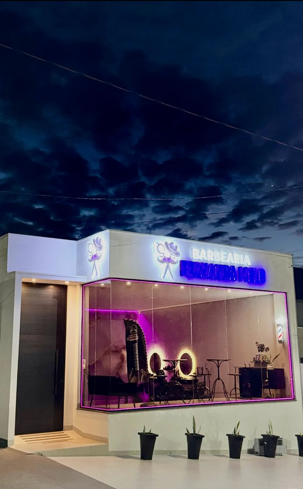
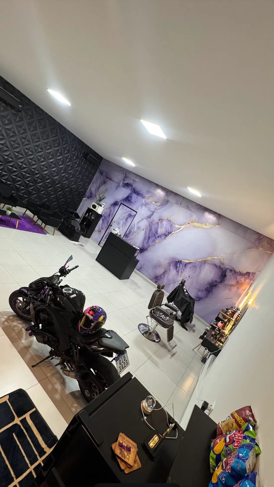
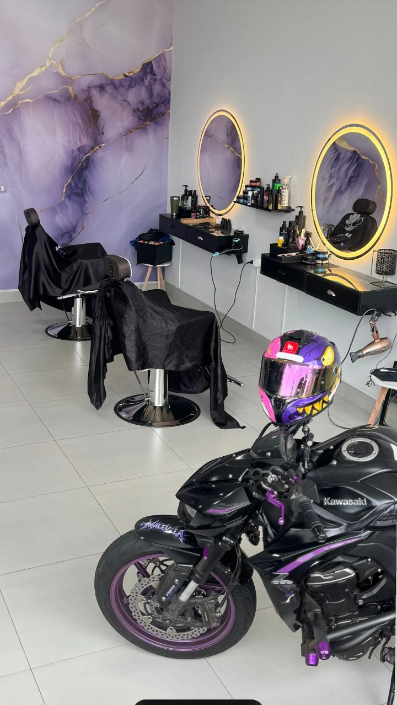
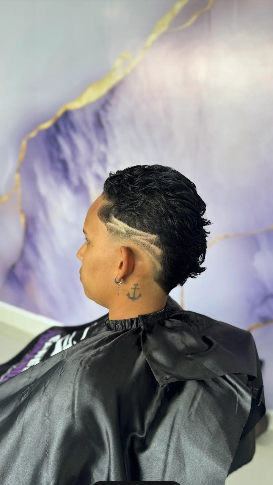

<title>Esboço Fernanda Melo</title>
<meta name="claude:viewport-fit-sides" content="cover">
<link rel="preconnect" href="https://fonts.googleapis.com"><link rel="preconnect" href="https://fonts.gstatic.com" crossorigin>
<link rel="stylesheet" href="https://fonts.googleapis.com/css2?family=Unbounded:wght@500;700;900&family=Cormorant+Garamond:ital,wght@0,600;1,500;1,600&family=Inter:wght@400;500;600&display=swap">
<style>
/* Esboço: história de fora pra dentro. Noite (preto + neon) → vidro → salão branco-leite com fumaça roxa e veios de ouro */
:root{
  --leite:#ffffff; --leite2:#f3effb; --preto:#0a0a12; --tinta:#0a0a12; --mudo:#55516a; --lavanda:#b79cf2;
  --roxo:#5b1fd1; --roxo-claro:#b79cf2; --neon:#8b2cff; --magenta:#d63cff; --azul:#2a0bff; --ouro:#d4a72c; --ouro-claro:#ffe48a; --ouro-escuro:#9a7417;
  --fd:'Unbounded','Arial Black',sans-serif; --fo:'Cormorant Garamond',Georgia,serif; --fb:'Inter',system-ui,sans-serif;
  color-scheme:light;
}
*{box-sizing:border-box}
body{background:var(--leite);color:var(--tinta);font-family:var(--fb);margin:0}
.faixa{padding-left:max(16px,env(safe-area-inset-left,0px));padding-right:max(16px,env(safe-area-inset-right,0px))}
.miolo{max-width:76rem;margin-inline:auto}
.nota{display:inline-flex;gap:.6rem;align-items:center;font:600 .66rem var(--fb);letter-spacing:.22em;text-transform:uppercase;color:var(--roxo);border:1px dashed rgb(107 63 184/.45);border-radius:99px;padding:.45em 1em;background:rgb(255 255 255/.6)}
.nota.escura{color:var(--roxo-claro);border-color:rgb(169 139 224/.45);background:rgb(0 0 0/.35)}
.efeito{font-size:.86rem;color:var(--mudo);max-width:62ch;line-height:1.55;margin-top:.7rem}
.escura .efeito,.efeito.claro{color:#b9b0c4}
h1,h2,h3{margin:0}
/* topo do esboço */
.capa{padding-block:clamp(2rem,6vw,3.5rem) 1rem}
.capa h1{font:700 clamp(1.4rem,3.4vw,2.2rem)/1.1 var(--fd);letter-spacing:-.01em;text-wrap:balance}
.capa h1 em{font:italic 600 1.15em var(--fo);color:var(--roxo)}
.capa p{color:var(--mudo);max-width:64ch;line-height:1.6;margin:.8rem 0 0}
/* paleta */
.paleta{padding-block:1rem 1rem}
.cores{display:grid;grid-template-columns:repeat(auto-fill,minmax(min(100%,9.5rem),1fr));gap:.8rem;margin-top:1rem}
.cores div{display:flex;flex-direction:column;gap:.2rem;min-width:0}
.cores i{display:block;height:4.5rem;border-radius:8px;margin-bottom:.4rem}
.cores b{font:700 .74rem var(--fd);text-transform:uppercase}
.cores code{font:600 .74rem ui-monospace,monospace;color:var(--tinta)}
.cores small{font-size:.74rem;color:var(--mudo)}
/* ===== abertura em quadros ===== */
.storyboard{padding-block:2rem 4rem}
.quadros{display:grid;grid-template-columns:repeat(auto-fit,minmax(min(100%,17rem),1fr));gap:1rem;margin-top:1.2rem}
.qd{display:flex;flex-direction:column;gap:.6rem;min-width:0}
.tela{position:relative;aspect-ratio:9/13;border-radius:10px;overflow:hidden;background:#000;isolation:isolate}
.tela img{position:absolute;inset:0;width:100%;height:100%;object-fit:cover}
.salao img,.espelho img,.foto-corte img,.q3 img{filter:saturate(1.35) contrast(1.08)}
.qd b{font:700 .74rem var(--fd);letter-spacing:.04em;text-transform:uppercase}
.qd span{font-size:.84rem;color:var(--mudo);line-height:1.5}
.qd i{font-style:normal;font:600 .66rem var(--fb);letter-spacing:.18em;color:var(--roxo)}
/* quadro 1: noite, o neon corre contornando a vitrine */
.q1 img{filter:brightness(.16) saturate(.4)}
.q1 svg,.q2 svg{position:absolute;inset:0;width:100%;height:100%}
.neon{fill:none;stroke:var(--neon);stroke-width:5;stroke-linejoin:round;filter:url(#brilho)}
.q1 .neon{stroke-dasharray:1500;stroke-dashoffset:1500;animation:corre 3.2s cubic-bezier(.65,0,.35,1) infinite}
@keyframes corre{0%{stroke-dashoffset:1500}60%,100%{stroke-dashoffset:0}}
/* quadro 2: o letreiro acende */
.q2 img{filter:brightness(.55) saturate(1.2)}
.q2 .neon{stroke-dashoffset:0}
.letreiro{position:absolute;left:52%;top:47.5%;transform:translate(-50%,-50%);font:900 clamp(.9rem,2.6vw,1.25rem)/1 var(--fd);color:#e8d9ff;letter-spacing:.02em;white-space:nowrap;text-shadow:0 0 6px var(--magenta),0 0 18px var(--neon),0 0 44px var(--azul);animation:pisca 3.2s steps(1) infinite}
@keyframes pisca{0%,8%{opacity:.15}9%,13%{opacity:1}14%,17%{opacity:.2}18%,100%{opacity:1}}
/* quadro 3: a câmera atravessa o vidro */
.q3 img{transform:scale(1.35);filter:blur(1.5px) brightness(1.05) saturate(1.35) contrast(1.08)}
.q3::before{content:'';position:absolute;inset:0;z-index:1;background:linear-gradient(115deg,transparent 35%,rgb(255 255 255/.7) 47%,rgb(196 92 255/.25) 52%,transparent 62%);animation:reflexo 2.6s ease-in-out infinite}
.q3::after{content:'';position:absolute;inset:0;z-index:2;border:2px solid rgb(196 92 255/.7);box-shadow:inset 0 0 40px rgb(196 92 255/.5);border-radius:10px}
@keyframes reflexo{0%{transform:translateX(-60%)}100%{transform:translateX(60%)}}
/* quadro 4: branco-leite, fumaça roxa e veios de ouro */
.q4{background:var(--leite)}
.fumaca{position:absolute;inset:0;width:100%;height:100%}
.veios{position:absolute;inset:0;width:100%;height:100%}
.veio{fill:none;stroke:url(#ouro);stroke-width:2.2;stroke-linecap:round;filter:drop-shadow(0 0 3px rgb(236 208 138/.8))}
.anima .veio{stroke-dasharray:var(--l,600);stroke-dashoffset:var(--l,600);animation:desenha 4s cubic-bezier(.65,0,.35,1) infinite}
@keyframes desenha{0%{stroke-dashoffset:var(--l,600)}55%,100%{stroke-dashoffset:0}}
.nome{position:absolute;inset:auto 0 12% 0;text-align:center;z-index:3}
.nome small{display:block;font:600 .62rem var(--fb);letter-spacing:.42em;color:var(--tinta);margin-bottom:.4rem}
.nome strong{display:block;font:600 clamp(1.5rem,4.4vw,2.2rem)/1 var(--fo);letter-spacing:.04em;text-transform:uppercase;background:linear-gradient(100deg,var(--ouro-escuro),var(--ouro-claro) 40%,var(--ouro) 60%,var(--ouro-claro));-webkit-background-clip:text;background-clip:text;color:transparent}

/* ===== seções do site ===== */
.secao{position:relative;padding-block:clamp(3.5rem,9vw,6.5rem);overflow:hidden}
.secao .rotulo{margin-bottom:1.6rem}
.titulo{font:700 clamp(2rem,6.4vw,4.6rem)/.98 var(--fd);letter-spacing:-.02em;text-transform:uppercase;text-wrap:balance}
.titulo em{font:italic 600 1.08em var(--fo);text-transform:none;letter-spacing:0;color:var(--roxo)}
.cta{display:inline-flex;align-items:center;gap:.7rem;background:var(--tinta);color:var(--leite);font:600 .78rem var(--fb);letter-spacing:.16em;text-transform:uppercase;text-decoration:none;padding:1.05em 1.8em;border-radius:99px;box-shadow:0 0 0 1px var(--ouro),0 10px 30px rgb(107 63 184/.25);transition:transform .3s,box-shadow .3s}
.cta:hover{transform:translateY(-2px);box-shadow:0 0 0 1px var(--ouro),0 14px 40px rgb(107 63 184/.4)}
.cta:focus-visible,.capsula:focus-visible{outline:2px solid var(--roxo);outline-offset:4px}
/* topo */
.topo{min-height:min(88vh,52rem);display:grid;align-items:center}
.topo .fumaca{opacity:.9}
.topo .grade{position:relative;z-index:2;display:grid;grid-template-columns:1.15fr .85fr;gap:clamp(1.5rem,4vw,4rem);align-items:center}
.topo p{color:var(--mudo);line-height:1.6;max-width:34ch;margin:1.2rem 0 1.8rem}
.espelho{position:relative;aspect-ratio:1;border-radius:50%;overflow:hidden;box-shadow:0 0 0 6px var(--ouro-claro),0 0 30px 10px rgb(255 228 138/.95),0 0 100px 26px rgb(255 210 74/.5)}
.espelho img{width:100%;height:100%;object-fit:cover;object-position:60% 40%}
/* salão: faixa com veio de ouro */
.salao .fotos{display:grid;grid-template-columns:1.3fr 1fr;gap:1rem;margin-top:2rem}
.salao figure{margin:0;border-radius:8px;overflow:hidden;position:relative;aspect-ratio:4/5}
.salao figure:first-child{aspect-ratio:auto}
.salao img{width:100%;height:100%;object-fit:cover;display:block}
.divisor{display:block;width:100%;height:60px;margin-top:2.5rem}
/* cortes: risco redesenhado em ouro */
.cortes .grade{display:grid;grid-template-columns:.9fr 1.1fr;gap:clamp(1.5rem,5vw,4rem);align-items:center}
.foto-corte{position:relative;border-radius:8px;overflow:hidden;aspect-ratio:720/1278;max-height:78vh;justify-self:center;width:100%;max-width:26rem}
.foto-corte img,.foto-corte svg{position:absolute;inset:0;width:100%;height:100%;object-fit:cover}
.risco{fill:none;stroke:url(#ouro2);stroke-width:5;stroke-linecap:round;filter:drop-shadow(0 0 6px rgb(236 208 138/.95));stroke-dasharray:var(--l);stroke-dashoffset:var(--l);animation:desenha 3.6s cubic-bezier(.65,0,.35,1) infinite}
/* serviços: cápsulas com fumaça roxa */
.capsulas{display:flex;flex-wrap:wrap;gap:.7rem;margin:2rem 0 1.4rem}
.capsula{position:relative;overflow:hidden;isolation:isolate;border:1px solid rgb(107 63 184/.45);background:#fff;color:var(--tinta);border-radius:99px;padding:.9rem 1.6rem;font:700 .82rem var(--fd);letter-spacing:.04em;text-transform:uppercase;cursor:pointer;transition:color .3s .1s}
.capsula::before{content:'';position:absolute;inset:-40%;z-index:-1;background:radial-gradient(circle at 30% 60%,var(--neon),transparent 55%),radial-gradient(circle at 70% 40%,#4b0fa8,transparent 60%),radial-gradient(circle at 50% 50%,var(--roxo),#3a0b8a);transform:scale(0);transition:transform .7s cubic-bezier(.16,1,.3,1);border-radius:50%}
.capsula[aria-selected=true]{color:#fff;border-color:transparent}
.capsula[aria-selected=true]::before{transform:scale(1.2)}
.itens{display:grid;grid-template-columns:repeat(auto-fill,minmax(min(100%,14rem),1fr));border:1px solid rgb(201 162 74/.55);border-radius:10px;overflow:hidden;background:#fff}
.item{padding:1.2rem 1.2rem 1.1rem;display:flex;flex-direction:column;gap:.4rem;min-height:8.5rem;box-shadow:inset 0 0 0 .5px rgb(201 162 74/.4)}
.item b{font:700 .95rem/1.2 var(--fd);text-transform:uppercase}
.item small{font:600 .66rem var(--fb);letter-spacing:.16em;text-transform:uppercase;color:var(--mudo)}
.item span{margin-top:auto;font:italic 600 1.7rem var(--fo);color:var(--roxo)}
/* malévola: tela escurece, farol acende */
.malevola{background:var(--preto);color:#f1ecf7}
.malevola .palco{position:relative;border-radius:10px;overflow:hidden;aspect-ratio:16/10;margin-top:1.6rem;background:#000}
.malevola .palco img{position:absolute;inset:0;width:100%;height:100%;object-fit:cover;object-position:60% 78%;filter:brightness(.35) contrast(1.15)}
.malevola .farol{position:absolute;inset:0;background:radial-gradient(ellipse 28% 22% at 36% 72%,rgb(255 255 255/.55),rgb(196 92 255/.25) 45%,transparent 70%);mix-blend-mode:screen;animation:farol 3.4s ease-in-out infinite}
@keyframes farol{0%,100%{opacity:.25}40%,70%{opacity:1}}
.malevola .grande{position:absolute;left:4%;bottom:6%;font:900 clamp(2.4rem,9vw,7rem)/.9 var(--fd);color:transparent;-webkit-text-stroke:1.5px var(--neon);text-shadow:0 0 30px rgb(196 92 255/.45);letter-spacing:-.02em}
.malevola .titulo em{color:var(--neon)}
/* equipe */
.equipe ol{list-style:none;margin:2rem 0 0;padding:0;display:grid;grid-template-columns:repeat(3,1fr);gap:1rem}
.equipe li{border-top:1px solid rgb(29 23 36/.15);padding-top:1rem}
.equipe .aro{width:100%;aspect-ratio:1;border-radius:50%;border:2px solid var(--ouro);display:grid;place-items:center;box-shadow:0 0 24px rgb(201 162 74/.35) inset;font:italic 600 clamp(2rem,6vw,3.6rem) var(--fo);color:var(--ouro);background:radial-gradient(circle,#fff,var(--leite2))}
.equipe b{display:block;margin-top:1rem;font:700 clamp(.9rem,2vw,1.2rem) var(--fd);text-transform:uppercase}
.equipe small{color:var(--mudo);font-size:.82rem}
/* agendar: o sistema delas, no visual novo */
.agendar .passos{display:grid;grid-template-columns:repeat(4,1fr);gap:.6rem;margin:2rem 0}
.passo{background:#fff;border:1px solid rgb(201 162 74/.5);border-radius:10px;padding:1rem}
.passo i{display:grid;place-items:center;width:2rem;height:2rem;border-radius:50%;font:700 .8rem var(--fd);font-style:normal;background:var(--roxo);color:#fff;box-shadow:0 0 0 3px rgb(201 162 74/.6)}
.passo b{display:block;margin-top:.7rem;font:700 .82rem var(--fd);text-transform:uppercase}
.passo span{font-size:.82rem;color:var(--mudo)}
.rodape{padding-block:2rem;border-top:1px solid rgb(29 23 36/.12);color:var(--mudo);font-size:.82rem}
@media (max-width:760px){
  .topo .grade,.cortes .grade,.salao .fotos{grid-template-columns:1fr}
  .equipe ol{grid-template-columns:1fr 1fr 1fr;gap:.6rem}
  .agendar .passos{grid-template-columns:1fr 1fr}
  .espelho{max-width:20rem;justify-self:center;width:100%}
}
@media (prefers-reduced-motion:reduce){*{animation:none!important}.anima .veio,.risco{stroke-dashoffset:0}.q1 .neon{stroke-dashoffset:0}}
</style>

<svg width="0" height="0" style="position:absolute" aria-hidden="true">
  <defs>
    <filter id="brilho" x="-20%" y="-20%" width="140%" height="140%"><feGaussianBlur stdDeviation="4" result="b"/><feMerge><feMergeNode in="b"/><feMergeNode in="b"/><feMergeNode in="SourceGraphic"/></feMerge></filter>
    <linearGradient id="ouro" x1="0" x2="1"><stop offset="0" stop-color="#9a7417"/><stop offset=".45" stop-color="#ffe48a"/><stop offset="1" stop-color="#d4a72c"/></linearGradient>
    <linearGradient id="ouro2" x1="0" x2="1"><stop offset="0" stop-color="#fff1b8"/><stop offset="1" stop-color="#ffd24a"/></linearGradient>
  </defs>
</svg>

<header class="faixa capa"><div class="miolo">
  <span class="nota">Esboço · não é o site final</span>
  <h1 style="margin-top:1rem">Barbearia Fernanda Melo <em>de fora pra dentro</em></h1>
  <p>Primeiro a abertura em quatro quadros-chave, depois cada seção do site com as fotos reais. Em cada parte, a nota diz qual efeito entra na versão de verdade. Fontes e textos ainda são provisórios.</p>
</div></header>


<section class="faixa paleta" aria-labelledby="h-pal"><div class="miolo">
  <h2 id="h-pal" class="nota">Paleta · medida nas fotos e levada ao máximo</h2>
  <div class="cores">
    <div><i style="background:#ffffff;box-shadow:inset 0 0 0 1px #e4e0ee"></i><b>Branco</b><code>#FFFFFF</code><small>paredes e piso</small></div>
    <div><i style="background:#5b1fd1"></i><b>Roxo</b><code>#5B1FD1</code><small>mármore e moto</small></div>
    <div><i style="background:#8b2cff"></i><b>Roxo neon</b><code>#8B2CFF</code><small>vitrine (#4001A1 medido)</small></div>
    <div><i style="background:#b79cf2"></i><b>Lavanda</b><code>#B79CF2</code><small>luz no mármore</small></div>
    <div><i style="background:#2a0bff"></i><b>Azul letreiro</b><code>#2A0BFF</code><small>letreiro (#1F00DF medido)</small></div>
    <div><i style="background:linear-gradient(135deg,#9a7417,#ffe48a 50%,#d4a72c)"></i><b>Dourado</b><code>#FFE48A · #D4A72C</code><small>aro aceso (#FFED91) e veios</small></div>
    <div><i style="background:#0a0a12"></i><b>Preto</b><code>#0A0A12</code><small>bancadas (#0A0B12 medido)</small></div>
  </div>
</div></section>
<section class="faixa storyboard" aria-labelledby="h-ab"><div class="miolo">
  <h2 id="h-ab" class="nota">Abertura · cerca de 6 segundos</h2>
  <div class="quadros">
    <div class="qd">
      <div class="tela q1">
        <svg viewBox="0 0 720 1160" preserveAspectRatio="xMidYMid slice" aria-hidden="true"><polygon class="neon" points="192,663 700,672 700,970 192,975"/></svg></div>
      <i>0,0 – 1,5 s</i><b>Noite</b><span>Tudo preto. Um fio de neon roxo corre e contorna a vitrine.</span>
    </div>
    <div class="qd">
      <div class="tela q2">
        <svg viewBox="0 0 720 1160" preserveAspectRatio="xMidYMid slice" aria-hidden="true"><polygon class="neon" points="192,663 700,672 700,970 192,975"/></svg>
        <div class="letreiro">FERNANDA MELO</div></div>
      <i>1,5 – 2,8 s</i><b>O letreiro acende</b><span>O nome pisca como neon ligando e a fachada aparece.</span>
    </div>
    <div class="qd">
      <div class="tela q3"></div>
      <i>2,8 – 3,8 s</i><b>Atravessa o vidro</b><span>A câmera avança, um reflexo cruza o vidro e entramos no salão.</span>
    </div>
    <div class="qd">
      <div class="tela q4 anima">
        <canvas class="fumaca" data-fumaca aria-hidden="true"></canvas>
        <svg class="veios" viewBox="0 0 300 433" preserveAspectRatio="xMidYMid slice" aria-hidden="true">
          <path class="veio" style="--l:420" d="M-10 90 C 50 110, 70 60, 120 95 S 200 170, 240 140 S 290 120, 320 160"/>
          <path class="veio" style="--l:300" d="M120 95 C 135 140, 110 180, 150 215 S 190 260, 175 300"/>
          <path class="veio" style="--l:260" d="M240 140 C 230 190, 260 215, 250 260"/>
        </svg>
        <div class="nome"><small>BARBEARIA</small><strong>Fernanda Melo</strong></div>
      </div>
      <i>3,8 – 6,0 s</i><b>Branco-leite</b><span>A fumaça roxa se espalha, veios de ouro racham por dentro e desenham o nome.</span>
    </div>
  </div>
</div></section>

<section class="faixa secao topo" aria-labelledby="h-topo">
  <canvas class="fumaca" data-fumaca data-forte aria-hidden="true" style="position:absolute;inset:0"></canvas>
  <div class="miolo grade">
    <div>
      <span class="nota rotulo">Seção 1 · Topo do site</span>
      <h2 id="h-topo" class="titulo">Barbearia <em>Fernanda Melo</em></h2>
      <p>Agende seu horário online em quatro passos: serviço, barbeira, data e confirmação.</p>
      <a class="cta" href="https://barber-pro-1f2a60f6.base44.app/agendamentocliente">Agendar horário</a>
      <p class="efeito">Efeito: a fumaça roxa segue o dedo ou o mouse e o título se monta letra por letra. O círculo é um dos espelhos dourados do salão, com o aro de luz pulsando.</p>
    </div>
    <div class="espelho"></div>
  </div>
</section>

<section class="faixa secao salao" aria-labelledby="h-salao"><div class="miolo">
  <span class="nota rotulo">Seção 2 · O salão</span>
  <h2 id="h-salao" class="titulo">Mármore, ouro <em>e luz</em></h2>
  <div class="fotos">
    <figure></figure>
    <figure></figure>
  </div>
  <svg class="divisor anima" viewBox="0 0 1200 60" preserveAspectRatio="none" aria-hidden="true"><path class="veio" style="--l:1300" d="M0 30 C 150 10, 260 55, 420 32 S 700 8, 820 36 S 1050 58, 1200 24"/><path class="veio" style="--l:240" d="M420 32 C 450 50, 470 52, 520 58"/></svg>
  <p class="efeito">Efeito: as fotos deslizam na horizontal com a rolagem e um veio de ouro se ramifica entre as seções, como no painel de mármore.</p>
</div></section>

<section class="faixa secao cortes" aria-labelledby="h-cortes"><div class="miolo grade">
  <div class="foto-corte">
    
    <svg viewBox="0 0 720 1278" preserveAspectRatio="xMidYMid slice" aria-hidden="true">
      <path class="risco" style="--l:110" d="M282 585 C 300 578, 318 578, 345 592"/>
      <path class="risco" style="--l:150" d="M287 597 C 318 598, 345 603, 380 612 S 405 622, 415 627"/>
      <path class="risco" style="--l:110" d="M330 615 C 350 618, 375 623, 395 632 S 412 640, 420 645"/>
    </svg>
  </div>
  <div>
    <span class="nota rotulo">Seção 3 · Os cortes</span>
    <h2 id="h-cortes" class="titulo">Cada risco <em>tem traço</em></h2>
    <p class="efeito">Efeito: na foto de cada trabalho, uma linha de ouro redesenha o desenho feito na navalha, o mesmo gesto dos veios do mármore. Galeria com os cortes do Instagram ou do Google.</p>
  </div>
</div></section>

<section class="faixa secao servicos" aria-labelledby="h-serv"><div class="miolo">
  <span class="nota rotulo">Seção 4 · Serviços</span>
  <h2 id="h-serv" class="titulo">O que vai ser <em>hoje?</em></h2>
  <div class="capsulas" role="tablist" aria-label="Serviços">
    <button class="capsula" role="tab" aria-selected="false" data-cat="corte">Corte</button>
    <button class="capsula" role="tab" aria-selected="false" data-cat="barba">Barba</button>
    <button class="capsula" role="tab" aria-selected="true" data-cat="combos">Combos</button>
    <button class="capsula" role="tab" aria-selected="false" data-cat="cuidados">Cuidados</button>
    <button class="capsula" role="tab" aria-selected="false" data-cat="massagem">Massagem</button>
  </div>
  <div class="itens" id="itens" role="tabpanel"></div>
  <p class="efeito">Efeito: a cápsula enche de fumaça roxa e a fumaça escorre abrindo o painel. Valores tirados do sistema de agendamento delas.</p>
</div></section>

<section class="faixa secao malevola" aria-labelledby="h-mal"><div class="miolo">
  <span class="nota rotulo escura">Seção 5 · Momento surpresa</span>
  <h2 id="h-mal" class="titulo">No meio do salão, <em>a Malévola</em></h2>
  <div class="palco"><div class="farol"></div><div class="grande">MALÉVOLA</div></div>
  <p class="efeito claro">Efeito: a página escurece de repente, o farol acende cortando a fumaça e o aro roxo da roda gira até virar o aro dourado de um espelho, que devolve o site ao branco.</p>
</div></section>

<section class="faixa secao equipe" aria-labelledby="h-eq"><div class="miolo">
  <span class="nota rotulo">Seção 6 · A equipe</span>
  <h2 id="h-eq" class="titulo">Quem <em>atende</em></h2>
  <ol>
    <li><div class="aro">K</div><b>Kassia</b><small>Barbeira</small></li>
    <li><div class="aro">R</div><b>Rayssa Camargo</b><small>Barbeira</small></li>
    <li><div class="aro">F</div><b>Fernanda Melo</b><small>Barbeira</small></li>
  </ol>
  <p class="efeito">Espaço reservado: as fotos entram dentro de aros dourados, como os espelhos. Faltam as fotos da equipe.</p>
</div></section>

<section class="faixa secao agendar" aria-labelledby="h-ag"><div class="miolo">
  <span class="nota rotulo">Seção 7 · Agendar</span>
  <h2 id="h-ag" class="titulo">Seu horário <em>em 4 passos</em></h2>
  <div class="passos">
    <div class="passo"><i>1</i><b>Serviço</b><span>16 opções com preço</span></div>
    <div class="passo"><i>2</i><b>Barbeira</b><span>Kassia, Rayssa ou Fernanda</span></div>
    <div class="passo"><i>3</i><b>Data e hora</b><span>Horários livres de verdade</span></div>
    <div class="passo"><i>4</i><b>Confirmar</b><span>Só nome e telefone</span></div>
  </div>
  <a class="cta" href="https://barber-pro-1f2a60f6.base44.app/agendamentocliente">Agendar horário</a>
  <p class="efeito">Depois da venda: o sistema atual ganha este visual e a pessoa escolhe o serviço aqui no site e já cai na data.</p>
</div></section>

<footer class="faixa rodape"><div class="miolo">Esboço para aprovação · Barbearia Fernanda Melo</div></footer>

<script>
// serviços reais do sistema de agendamento delas
const SERV={
  corte:[['Corte masculino','30 min','R$ 60'],['Corte infantil','30 min','R$ 60'],['Corte feminino adulto','60 min','R$ 150'],['Raspagem lateral','30 min','R$ 30']],
  barba:[['Barba','30 min','R$ 55'],['Pigmentação de barba','30 min','R$ 45']],
  combos:[['Corte e barba','60 min','R$ 115'],['Corte e sobrancelha','30 min','R$ 85'],['Corte, barba e sobrancelha','60 min','R$ 140']],
  cuidados:[['Hidratação masculina','30 min','R$ 50'],['Selagem masculina (progressiva)','60 min','R$ 70'],['Limpeza superficial de pele','30 min','R$ 45'],['Sobrancelhas','30 min','R$ 25']],
  massagem:[['Massagem relaxante','60 min','R$ 110'],['Massagem liberação miofascial express','60 min','R$ 120']]
};
const itens=document.getElementById('itens');
function mostra(cat){ itens.innerHTML=SERV[cat].map(([n,d,p])=>`<div class="item"><b>${n}</b><small>${d}</small><span>${p}</span></div>`).join(''); }
document.querySelectorAll('.capsula').forEach(c=>c.addEventListener('click',()=>{ document.querySelectorAll('.capsula').forEach(x=>x.setAttribute('aria-selected',x===c)); mostra(c.dataset.cat); }));
mostra('combos');

// fumaça roxa: manchas suaves que derivam devagar sobre o branco-leite
const reduz=matchMedia('(prefers-reduced-motion: reduce)').matches;
document.querySelectorAll('[data-fumaca]').forEach(cv=>{
  const ctx=cv.getContext('2d'), forte=cv.hasAttribute('data-forte');
  let W=0,H=0; const N=forte?14:10;
  const bolhas=Array.from({length:N},(_,i)=>({x:Math.random(),y:.25+Math.random()*.6,r:.18+Math.random()*.3,vx:(Math.random()-.5)*.02,vy:(Math.random()-.5)*.012,f:Math.random()*6,c:i%4}));
  const cores=[[91,31,209],[139,44,255],[75,15,168],[183,156,242]];
  function tam(){ const r=cv.getBoundingClientRect(); W=cv.width=Math.max(1,Math.round(r.width/3)); H=cv.height=Math.max(1,Math.round(r.height/3)); cv.style.filter='blur('+(forte?28:16)+'px)'; }
  function quadro(t){
    ctx.clearRect(0,0,W,H);
    bolhas.forEach(b=>{ if(!reduz){ b.x+=b.vx*.016+Math.sin(t/3000+b.f)*.0006; b.y+=b.vy*.016+Math.cos(t/2600+b.f)*.0005; if(b.x<-.3)b.x=1.3; if(b.x>1.3)b.x=-.3; if(b.y<-.2)b.y=1.2; if(b.y>1.2)b.y=-.2; }
      const R=b.r*Math.max(W,H), g=ctx.createRadialGradient(b.x*W,b.y*H,0,b.x*W,b.y*H,R), c=cores[b.c%4], a=forte?.5:.42;
      g.addColorStop(0,`rgba(${c[0]},${c[1]},${c[2]},${a})`); g.addColorStop(.55,`rgba(${c[0]},${c[1]},${c[2]},${a*.35})`); g.addColorStop(1,`rgba(${c[0]},${c[1]},${c[2]},0)`);
      ctx.fillStyle=g; ctx.beginPath(); ctx.arc(b.x*W,b.y*H,R,0,7); ctx.fill(); });
    if(!reduz) requestAnimationFrame(quadro);
  }
  tam(); addEventListener('resize',tam); requestAnimationFrame(quadro);
});
</script>
